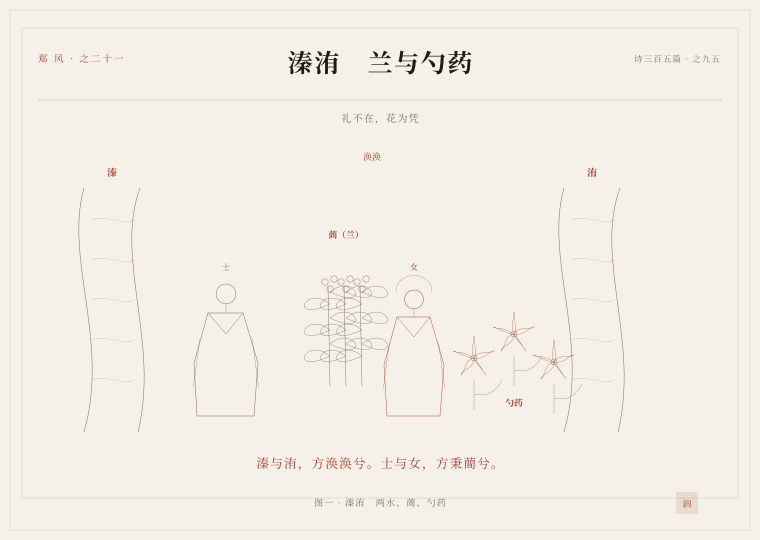
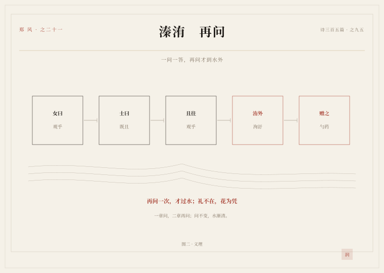

第九十五篇 溱洧
郑风 · 之二十一 SJ095
朗读 · 普通话
依经文原文朗读，章次不读出；配古琴底乐，不改速、不加拖腔。全库同一音色（豆包 TTS），非播音员录制。
一 解题
诗三判：
- 谁在说：一个在溱洧水边春游的女子，和一个已经被她问过一遍的男子。她问“去看吗”，他说“已经去过了”；她又说“再去看看”。
- 说什么事：两章。水由“涣涣”到“清”，人由“秉蕳”到“殷盈”；问不变，答不变，只有水边的花与赠不变。
- 为何编在此：郑风之二十一，郑风收篇。094
写“不期而遇”，095
写“再问一遍”。一个是天给的机会，一个是人自己再求一次。
《毛序》：“《溱洧》，刺乱也。兵革不息，男女相弃，淫风大行，莫之能救焉。”
朱子《诗集传》：“赋而兴也。涣涣、春水盛貌。盖冰解而水散之时也。蕑、兰也。……勺药、亦香草也。三月开花。芳色可爱。○郑国之俗、三月上巳之辰、采兰水上、以祓除不祥。故其女问于士曰、盍往观乎。士曰、吾既往矣。女复要之曰、且往观乎。盖洧水之外、其地信宽大、而可乐也。于是士女相与戏谑、且以勺药为赠、而结恩情之厚也。此诗、淫奔者、自叙之词。”
本库的看法：《溱洧》是一首把“约”写成“再问”的诗。
第一章水正涨，人正多，兰正拿在手里；女问，男答“已去过”；女不罢休，再说“再去看看”。“且往观乎”四个字，是全诗的转轴：不是礼，不是媒，是一句再邀。到了水外，地宽人乐，士女相谑，赠一支勺药。花不是礼，是凭证；礼不在，花为凭。
先辨五事：“涣涣”是春水盛，不是“涣散”；“蕳”是兰，不是“简”；“既且”是已经去过，且读徂；“洵訏”是信宽大，不是“吁”；“勺药”是香草，不是今之芍药。
二 经文
第一章
溱与洧，方涣涣兮。
士与女，方秉蕳兮。
女曰观乎？士曰既且。
且往观乎？洧之外，洵訏且乐。
维士与女，伊其相谑，赠之以勺药。
第二章
溱与洧，浏其清矣。
士与女，殷其盈矣。
女曰观乎？士曰既且。
且往观乎？洧之外，洵訏且乐。
维士与女，伊其将谑，赠之以勺药。
分章：二章，章十二句。
三 韵读
- 一章：涣、蕳、观，元部；乐、药，药部。朱子“涣叶于元反”“蕳叶古贤反”。
- 二章：清、盈，耕部；乐、药，药部。
读法：元部开而圆，像春水；耕部清而长，像人声；药部收，像赠花一瞬。水越清，话越轻，花越重。
四 字义与名物
- 溱、洧：郑国两水名。涣涣：春水盛貌；冰解水散。
- 士与女：男子与女子。秉：执、拿。蕳：兰；香草。
- 观：看、游观。既且：已经去过；且，往。且往：再去。
- 洵：信、确实。訏：大、宽大。乐：乐。
- 伊：因、语辞。相谑：互相戏谑。勺药：香草；三月开花，芳色可爱。
五 今译
溱水与洧水，正涨得满满的。男子与女子，正拿着兰草。女的说：去看看吗？男的说：已经去过了。女的说：再去看看嘛！洧水外面，真是又宽又乐。男子与女子，就互相戏谑，送她一支勺药。
溱水与洧水，清得深深的。男子与女子，多得满满的。女的说：去看看吗？男的说：已经去过了。女的说：再去看看嘛！洧水外面，真是又宽又乐。男子与女子，就互相戏谑，送她一支勺药。
六 章旨
- 一章：写“涣涣”与“相谑”。水涨、人聚、兰在手；一问一答，问的人不肯罢。
- 二章：写“浏清”与“将谑”。水清、人满、话更轻；再问一遍，才走到水外。
- 总收：水涣涣，人殷殷；礼不在，花为凭。
不是约在礼里，是约在水边。
七 诗教
- 兴：以“溱与洧”起兴。先写水，再写人，再写花；水是时，人是众，花是凭。
- 观：观“再问”。女问两次，男答两次；“再问”不是轻佻，是不肯断。
- 群：上巳祓除，是整条水边的事；两个人相谑，背后是一季的人群。
- 怨：诗里没有怨，只有谑。谑得轻，才掩得住“礼不在”。
八 分寸与边界
- 不可把“涣涣”读成“涣散”。它是春水盛；一读成散，水就退了。
- 不可把“蕳”读成“简”。它是兰；一读成简策，香草就成书。
- 不可把“既且”读成“既然”。且是往；一读成连词，答话就没了。
- 不可把“洵訏”读成“吁”。它是信宽大；一读成叹，地就窄了。
- 不可把“勺药”读成今之芍药。它是香草；一读成花店，赠就成买卖。
九 存疑
- 诗旨：毛序“刺乱，淫风大行”；朱子“淫奔者自叙”。一刺一叙；本库两存，以“再问”读。
- “蕳”：兰；一说“莲”。从毛传、朱子，作兰。
- “既且”：已经去过；一说“且”为语辞。从“往”义，才与“再往”对。
- “勺药”：香草；一说即今芍药。从古香草，才见“结恩情”。
- “将谑”：朱熹“将当作相”；一本作“相谑”。从“相”，两章一致。
十 跨典
- 《周礼·地官·媒氏》：“仲春之月，令会男女，于是时也，奔者不禁。”——溱洧之会，有媒氏之令为底。
- 《韩诗章句》：“郑国之俗，三月上巳，之溱洧两水之上，招魂续魄，秉兰草，祓除不祥。”——秉蕳、赠勺药，是上巳之俗。
- 《论语·先进》：“莫春者，春服既成……浴乎沂，风乎舞雩，咏而归。”——春水边的开放，不止郑国。
- 《诗本音》：一章涣、蕳、观元部，乐、药药部；二章清、盈耕部，乐、药药部，见卷三。
十一 双卡与图
双卡八对：
| 涣涣（春水盛） |
涣涣（涣散） |
| 蕳（兰） |
蕳（简） |
| 既且（已去过） |
既且（既然） |
| 且往（再去） |
且往（将要往） |
| 洵訏（信宽大） |
洵訏（吁叹） |
| 相谑（互相戏谑） |
相谑（嘲笑） |
| 勺药（香草） |
勺药（今芍药） |
| 将谑（相谑） |
将谑（将要谑） |

图一 · 溱洧 两水、兰、勺药

图二 · 溱洧 再问、再往
读图三处：
- 两水并流：图一左溱右洧，两条水线一涨一清；两水都在，才成“溱洧”。
- 兰与勺药：图一中段一束兰叶，右下三朵勺药；兰是手里，勺药是赠后。
- 一问一答：图二上排“女问—士答”，下排“再问—再往”，中间只隔一道水线；水线不宽，话要过两遍。